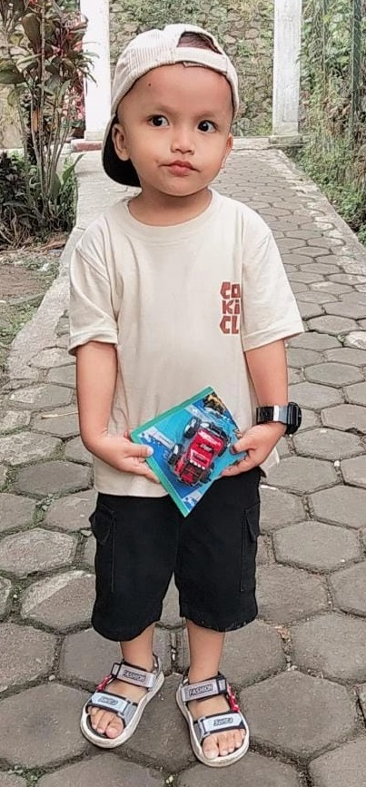

بِسْمِ اللّٰهِ الرَّحْمٰنِ الرَّحِيْمِ
TASYAKURAN KHITAN

AZRIEL RADHIKA AL FARIS
Putra dari Aris Salman Faris & Ima
Assalamu'alaikum Warahmatullahi Wabarakatuh
Dengan memohon rahmat dan ridho Allah SWT, kami mengundang Bapak/Ibu/Saudara/i untuk menghadiri acara Tasyakuran Khitan putra kami.
Azriel Radhika Al Faris
Detail Acara
Menuju Hari Bahagia
00Hari
00Jam
00Menit
00Detik
Tanggal : 09 – 10 Juli 2026
Hari : Kamis & Jumat
Waktu : 09.00 WIB s/d Selesai
Alamat :
Kp. Tegal panjang
RT 003/ RW 001, Desa Leuwikoja
Kecamatan Mande, Kabupaten Cianjur
Provinsi Jawa Barat
📍 Buka Google Maps
Terima kasih atas doa dan kehadirannya.
Aris Salman Faris & Ima